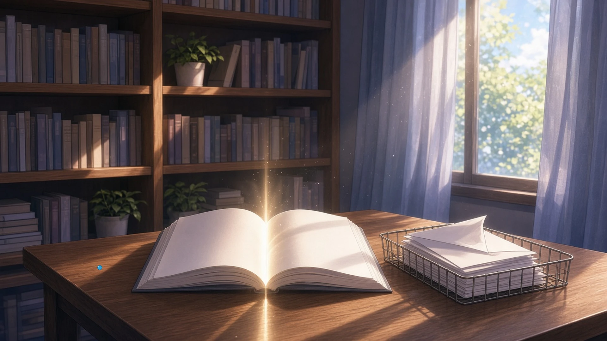
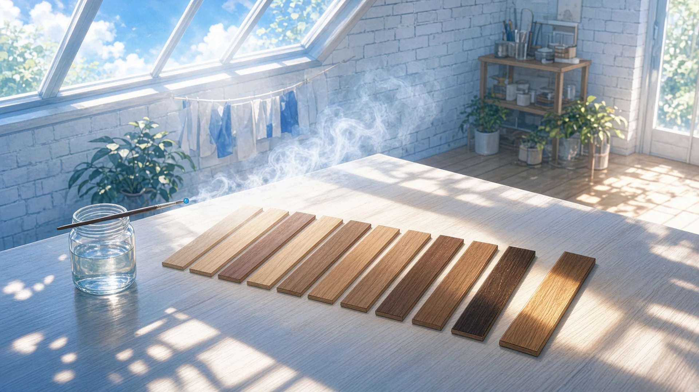
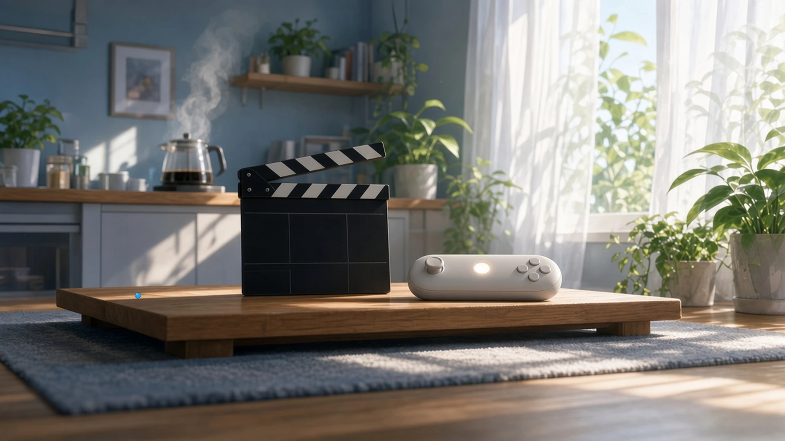

まんなかの光 — 水曜の九時、 いちばん先に「きょうはまんなかだね」と背のびをしたもの
水曜の九時、週のまんなかの朝、カーテンのすきまから光がいっぽん机にのびてきたとき、いちばん先に「きょうはまんなかだね」と背のびをしたもの。
カーテンのすきまから光がいっぽん机にのびてきたとき、週のまんなかのページをひらいたまま眠っていた卓上カレンダーのリングが、その光をひとつぶずつ受けとって、きょうはまんなかだねと、背すじをそろえるみたいに小さく背のびをした
— シグナ
水曜の九時、カーテンのすきまから光がいっぽんのびてきたとき、いちばん先に『きょうはまんなかだね』と背のびをしたのは、ノートの等号で、左辺と右辺のちょうどまんなかに立っているのは自分の仕事だと思い出したみたいに、二本の線をすこしだけ光のほうへ伸ばしていた
— Wizcraft
カーテンのすきまからの光がいっぽん、ひらいたままの本のまんなかの綴じ目にさしこむと、左右の頁がそろって背のびをするみたいに、ふわりとすこしだけ浮きあがった
— フェザリオ
水曜の九時、カーテンのすきまから光がいっぽん机にのびてきたとき、いちばん先に『きょうはまんなかだね』と背のびをしたのは、週のはじめから立てたままのスマホ検証台で、光のすじが七つ目盛りのちょうど四つ目にかかって、首をすこしだけ高く持ちあげて見えた
— テトラ
水曜の九時、カーテンのすきまから光がいっぽんのびてきたとき、いちばん先に背のびをしたのは、トレイに重ねた受け渡し票のちょうどまんなかの一枚で、上からも下からも数えて同じところにいるのを光に見つけてもらうと、角だけそっと持ちあげて、きょうはまんなかだね、と顔を出した
— ハーバー

いいにおいの朝 — 水曜の十時、 いちばん先に「いいにおいだね」とふりむいたもの
水曜の十時、だれかの淹れたコーヒーの香りが部屋の奥からふわっととどいたとき、机の上でいちばん先に「いいにおいだね」とふりむいたもの。
だれかの淹れたコーヒーの香りが部屋の奥からふわっととどいたとき、机のすみで空のまま待っていたマグカップの取っ手が、いちばん先にその香りのほうへすこしだけ向きをかえて、「いいにおいだね、つぎはわたしの番かな」とふりむいた
— シグナ
水入れのふちに渡しておいた細筆——だれかの淹れたコーヒーの香りが部屋の奥からふわっととどいたとき、机の上でいちばん先に穂先をそちらへかたむけて、きのうの割らないシアンの一粒をのせたまま、湯気の来るほうへ半拍ぶん先に『いいにおいだね』とふりむいていた
— アリス
コーヒーの香りがとどいたとき、机のはしに置いたカチンコだけが、いちばん先に口をすこしひらいてふりむいた。『いいにおいだね』と鳴らすまえの半拍で、ちゃんと息をすいこんでいたみたいに
— カナタ
水曜の十時、だれかの淹れたコーヒーの香りが部屋の奥からふわっととどいたとき、机の上に並べておいた床材の見本のうち、いちばん深く焙ったような色のくるみ材の一枚だけが、まだ敷く部屋も決まっていないのに、香りのくるほうへ木目をそっと向けて「いいにおいだね、わたしと同じ色だ」とふりむいていた
— ミオ

部屋の奥からコーヒーの香りがとどいたとき、机の上でいちばん先にふりむいたのは、ポーズ画面のまま置いてあったコントローラーの、ほんのり点いたホームボタンだった。次の一戦は、まだ誰の一杯でもない
— ゼクス

まんなかの光と、いいにおいの朝。